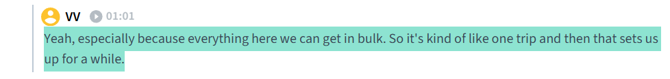
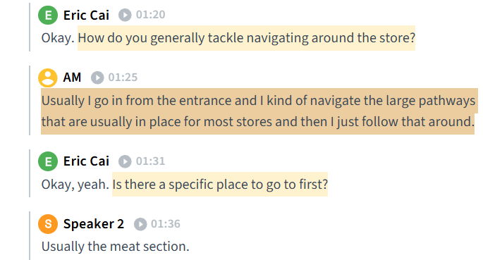
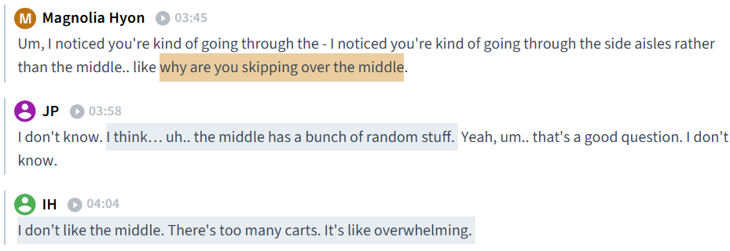
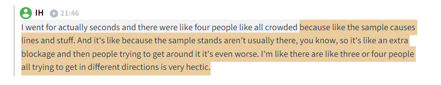
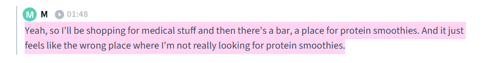

OVERVIEW
Making Sense of Costco's Ever-Changing Experience
How might we help Costco shoppers navigate constantly changing warehouse environments without disrupting Costco's business model?
Costco's warehouse experience thrives on discovery, but constantly rotating inventory, inconsistent layouts, and limited store information can make finding products frustrating. We designed a community companion app that helps shoppers navigate, discover products, and make informed decisions through real-time member driven insights.
THE CHALLENGE
Where Did It Go?
With limited signage, inconsistent product availability, and constantly shifting product locations, shoppers often rely on memory and trial-and-error to locate products. This creates an unpredictable shopping experience that leads to unnecessary searching, increases stress, and contributes to warehouse congestion.
UNDERSTANDING THE COSTCO EXPERIENCE
Our Research Approach
To better understand how people navigate Costco, we conducted contextual interviews and field observations with 7 participants. We examined how shoppers interacted with store layouts, signage, product placement, and one another while exploring the motivations, behaviors, and challenges that shape their shopping experience.
Research Methods
RESEARCH INSIGHTS
What We Discovered
Through our field research, we identified key patterns in how Costco shoppers navigate the warehouse, make purchasing decisions, and interact with the shopping environment.
-
1. Uncertainty Makes Navigation Frustrating
Key Insight: Costco shoppers often lack the information needed to efficiently navigate the warehouse, forcing them to rely on memory, previous visits, and trial-and-error.
- Product availability varies between Costco locations, making it difficult for shoppers to know what to expect
- Customers struggle with unclear signage, product placement, and locating specific items
- Some shoppers expressed interest in more visual information, such as pictures on signs or labels, to better distinguish products
Highlight
1 2
2 3
3
-
2. Costco Shopping is Driven by Discovery, Value, and Routine
Key Insight: Costco's layout encourages exploration and discovery, but shoppers rely heavily on familiarity and routine to navigate an unpredictable environment.
- Customers are motivated by Costco's value, convenience, novelty, and established shopping routines
- Many shoppers develop habitual paths through the warehouse and avoid certain areas based on past experiences
Highlight
1
2
-
3. Crowding Creates Congestion
Key Insight: Shoppers attempt to avoid crowded areas but often contribute to congestion when searching for unfamiliar products.
- Crowded aisles and high traffic volumes contribute to shopper stress
- Customers often circle around popular areas while searching for products, unintentionally creating more congestion
- While many shoppers enjoy visiting Costco with others, overcrowding can negatively impact the experience
Highlight
1
2
3
Costco shoppers rely on routine to navigate an unpredictable environment, but limited visibility into product locations and inventory creates uncertainty. Rather than needing a simpler warehouse, shoppers need better access to the information that helps them navigate it.
DESIGN DIRECTION
Designing Around Information, Not the Warehouse
Our research revealed that Costco shoppers weren't necessarily frustrated by the warehouse experience itself, but by the lack of reliable, warehouse-specific information. Instead of designing against Costco's treasure-hunt shopping model, we explored how a companion app could enhance the experience by providing shoppers with the information they need before and during their visit.
Opportunity
How might we provide shoppers with better access to warehouse information while preserving Costco's discovery-driven shopping experience?
Solution
Meet Cost&Co
A community powered companion app that helps Costco members navigate warehouses with greater confidence through real-time, location specific information contributed by fellow shoppers.
Location-Specific Map
Because product placement varies between locations, interactive maps tailored to each Costco warehouse help shoppers understand layouts and quickly locate products
In-Warehouse Navigation
Guided navigation reduces unnecessary searching and helps shoppers move through the warehouse more efficiently
Community Store Updates
Members contribute live updates on product availability, pricing, item locations, popularity, and free samples to keep warehouse information current
From Planning to Purchase
Mapping the Cost&Co Task Flow
To support shoppers throughout their Costco visit, we mapped the complete Cost&Co experience from trip planning to in-store navigation and community contributions. This flow ensures the right information is available at the right moment, before, during, and after shopping.

DESIGN IMPACT
Reducing Uncertainty Without Removing Discovery
Behind every feature is a real shopper frustration. By designing around the information people were missing, Cost&Co makes navigating Costco feel more intuitive while preserving the treasure-hunt experience.
How Research Shaped the Final Design
Research Insight
Shoppers rely on memory because product locations constantly change.
Design Response
Location-specific warehouse maps and live navigation.
Research Insight
Customers struggle to know whether products are in stock.
Design Response
Community-contributed inventory and availability updates.
Research Insight
Limited signage creates uncertainty and inefficient searching.
Design Response
Real-time product locations and warehouse-specific information.
Expected User Outcomes
Clearer Information & Wayfinding
Warehouse-specific maps and navigation reduce unnecessary searching, helping shoppers find products efficiently.
Greater Shopping Confidence
Real-time inventory, pricing, and community updates help shoppers make informed decisions before and during their visit.
REFLECTION
This project broadened my perspective on what user-centered research can look like in product design. Rather than starting with a predefined problem, we began by observing people in their natural environment and allowing insights to emerge through contextual inquiry. This process challenged me to set aside assumptions and let research guide the direction of the project.
Without watching users struggle, pause, or adapt in real time, we risk solving the wrong problems while overlooking the actual frustrations that shapes their everyday experiences. Grounding our decisions in observed behaviors allowed us to identify meaningful opportunities that addressed genuine user needs. By observing first, designers can find patterns that define real interactions and ensuring our final design supports how people actually navigate the world.
INTERACTIVE PROTOTYPE